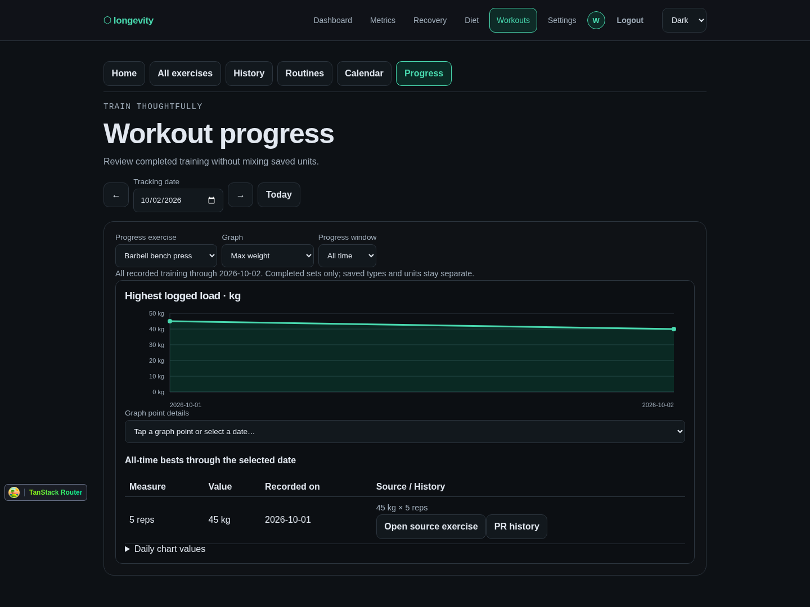
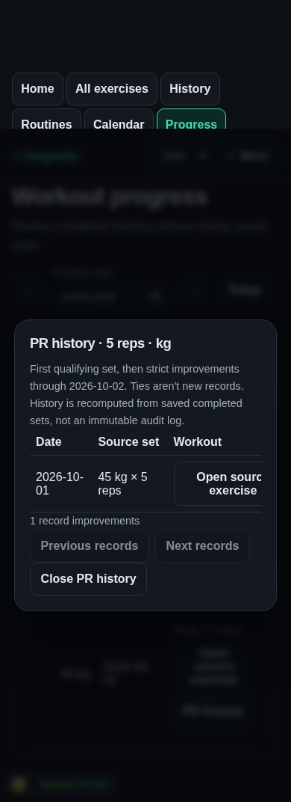
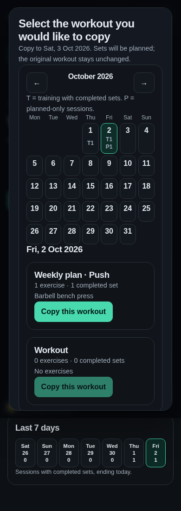
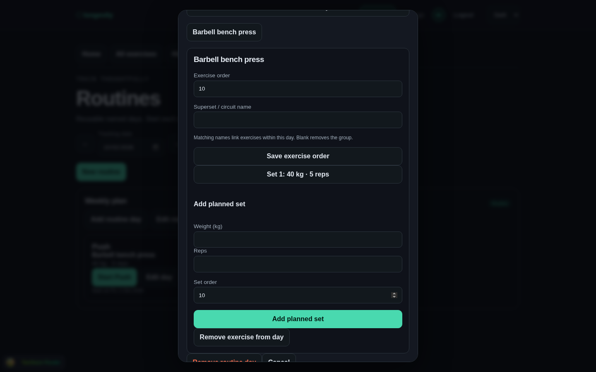

Preserve history
Archive catalog entries. Freeze recorded names/types/units. Do not implement FitNotes-style destructive type changes or relabel old kg quantities as lb.
Reference behaviorA comparison of all 12 topics linked from FitNotes Help Overview, their linked subsections, and embedded screenshots against Longevity's committed implementation at 96d706b. “Covered” means the core behavior exists, not a pixel-perfect Android clone.
Scope: the help index contains 76 links including its own anchor. Ten feature pages were re-read from saved reference captures; Glossary, FAQ and the index were fetched for this review. Screenshots on the feature pages were visually reviewed using 22 contact sheets. External app-store, research and video destinations are not claimed as reviewed product screens.
Most gaps sit around an existing feature, rather than requiring a second workout system.
| FitNotes topic | What we have | What remains / differs |
|---|---|---|
| Quick Start Core covered | Explicit start → library → sets → workout overview. Editable samples; navigation between exercises and dates. | Our finish/reopen status is explicit. Browsing the library does not silently start a session. |
| Workout Tracking Mostly covered | Create/edit/delete/repeat sets; comments; planned/completed state; progress counts; sidebar navigation; notes, units, rest/increments; coloured supersets and wraparound. | Drag reordering, batch edits, PR badges on individual sets, and auto-selecting the next planned set. Previous values are explicit suggestions, not silent prefill. Group cycling exists; ordinary next-exercise completion prompting does not. |
| Home Screen Mostly covered | Today/date navigation, overview cards, session notes, whole-workout copying, date change via Session details, removal, finish/reopen. Multiple same-day sessions. | Workout start/end timing, text sharing, selective copy/move, multi-select delete, drag ordering. Copy creates a new independent planned session rather than merging selected sets into a current session. |
| Workout Tools Partial | Visual deadline rest timer and auto-start; estimated 1RM and 2–15 rep loads; percentage/rounding calculator; finite-inventory balanced plates. | Sound/vibration, reliable background alerts, persisted timer/plate/bar preferences, custom plate entries and per-exercise bar settings. No PR “Select Max” picker in percentage tools yet. |
| History / Graphs Mostly covered | Exercise history, source navigation, strength graphs, exact-rep load, volume/reps totals, distance/time maxima, point details, numeric axes, bounded windows and server-backed All time. | Cardio speed/pace and total distance/time; trend line and chart sharing; selectable axis mode; previous/next point buttons; historical set quick-stats and selective copying. Our daily maxima collapse same-day sessions; session totals do not. |
| Personal Records Core covered | Windowed and all-time observed strongest load per exact rep count, source sets and paginated strict improvement history. | No unified estimated-records panel or dedicated PR-history chart. We intentionally do not propagate a higher-rep result into a lower-rep record. Source corrections recompute history. |
| Stats / Goals / Overview Not yet built | Charts/records already provide the underlying completed-set data; history and progress are reachable from library/training. | One exercise hub with period-based totals, counts, source-linked maxima and editable goal progress. Goals need explicit metric, units, rep-count rules and correction semantics. |
| Exercises / Categories Mostly covered | Editable private samples, add/edit, category moves, search, notes/defaults, numeric ordering, archive/restore, history links and per-exercise units on every plan. | Favorites, last-used/workout-count hints, tokenized search, category colours and drag sorting. Four current types do not cover every FitNotes field combination. Archive intentionally replaces destructive catalog deletion. |
| Routines Mostly covered | Named routines/days, direct editing, planned sets, ordering, groups, capture/replace from sessions and independent starts. Archive preserves templates/history. | Explicit last-workout carry-forward, pre-start selection/edit preview, routine duplication and appending selected routine exercises to an existing session. Routine groups currently use label inputs, not the session membership-picker UX. |
| Calendar Partial | Month navigation, training versus planned markers, date drill-down and calendar source selection for copying. Separate History offers paginated lists and exercise filtering. | Category-colour dots; match-any/all category filters; weight/rep conditions; configurable week start; previous/next trained-date navigation. Calendar itself has no list/filter parity yet. |
| Body Tracker Existing Metrics | Measurements belong in Metrics: entries with dates/notes, custom definitions, history and graphs. Do not duplicate them under Workouts. | Generic measurement-goal overlays, direction-aware deltas and measurement ordering are not fully equivalent. Existing custom-metric entitlements remain separate from free basic workouts. |
| Settings / Data Partial | App themes; saved exercise units/increments/rest; private account JSON export includes workout data; workout/account deletion. Derived PRs need no manual repair command. | Workout-specific preferences, keep-awake mode, workout CSV, validated import/restore and date-range bulk cleanup. Account JSON download is not a tested restore backup. Cloud storage is not proof of offline availability. |
| Glossary Some inline help | Formula/uncertainty labels in tools; notes distinguishing observed lifts from estimates and planned from completed sets. | A concise workout help/glossary, especially rep maximum, volume, external load, units, estimates and completed-set inclusion. |
| FAQ Product-specific | Our workout log is web-based and available on every account. Android companion work currently concerns metric sync, not native workout logging. | Our own help/feedback entry point and an explicit supported-platform/offline policy. FitNotes' Android/supporter product policy should not be copied. |
Current-app screenshots below come from the last isolated real-Django browser run. Reference sheets show the FitNotes screens inspected. Proposed features are not presented as already implemented.




Recommendation, not implementation authorization. Deliver each as a tested slice.
Archive catalog entries. Freeze recorded names/types/units. Do not implement FitNotes-style destructive type changes or relabel old kg quantities as lb.
Reference behaviorOur exact-rep best is an actually logged set. A higher-rep set can inform a capability estimate, but should not silently become a performed lower-rep record.
Reference precedence ruleUse Metrics for body measurements. A second Body Tracker would duplicate ownership, graphs, exports and goals.
Keep the complete basic workout log available to every account. Any advanced Pro decision is separate from FitNotes' Supporter policy.